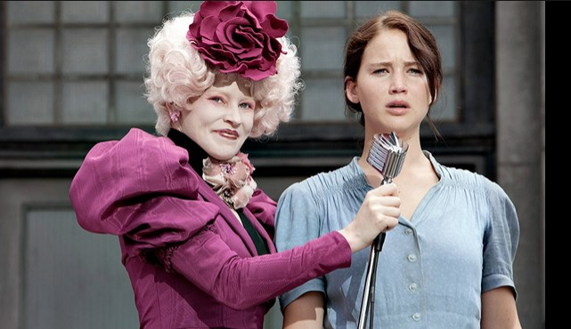
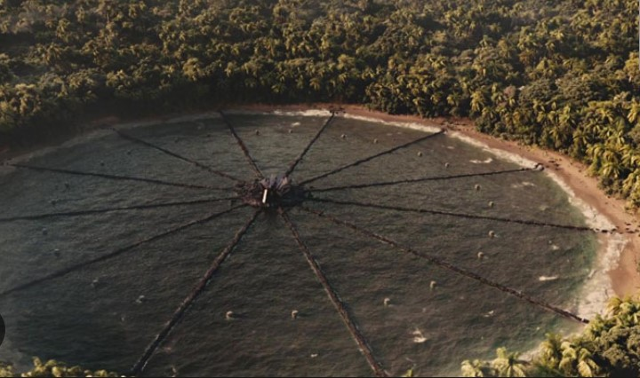

"As regras dos Jogos Vorazes são simples. Como punição pelo levante, cada um dos doze distritos deve fornecer uma garota e um garoto chamados tributos - para participarem. Os vinte e quatro tributos serão aprisionados em uma vasta arena a céu aberto que pode conter qualquer coisa: de um deserto em chamas a um descampado congelado. Por várias semanas os competidores deverão lutar até a morte. O último tributo restante será o vencedor."
A Colheita
A colheita é o evento anual que acontece em todos os distritos antes de cada Jogos Vorazes, onde os tributos para o próximo jogo são escolhidos, através de um sorteio.

"O sistema da colheita é injusto, com os pobres ficando com a pior parte. Você se torna elegível para a colheita no dia em que completa doze anos. Nesse ano, seu nome é inscrito uma vez. Aos treze, duas vezes. E assim por diante até você atingir a idade de dezoito anos, o último ano elegível, quando seu nome aparece sete
vezes no sorteio. É assim que acontece para todos os cidadãos nos doze distritos em todo o país de Panem. Mas al vem a jogada. Digamos que você seja pobre e esteja passando fome como nós estávamos. Você pode optar por adicionar seu nome mais vezes em troca de tésseras. Cada téssera vale um escasso suprimento anual de grãos
e óleo para cada pessoa. Você também pode fazer isso para cada membro de sua família. Assim, aos doze anos de idade, meu nome foi inscrito quatro vezes no sorteio. Uma vez porque era obrigatório e outras três vezes por causa das tésseras que garantiram grãos e óleo para mim, para Prim e para minha mãe. Na verdade, precisei
fazer isso a cada ano. E as inscrições são cumulativas. Então agora, com dezesseis anos, meu nome aparecerá vinte vezes na colheita. Gale, que tem dezoito e tem ajudado ou alimentado sozinho uma família de cinco pessoas por sete anos, aparecerá 42 vezes no sorteio."
Treinamento
Durante a viagem até a Capital, os Tributos conhecem a equipe que os acompanharão: seu mentor, estilista e equipe de apoio. Cabe ao mentor passar sua experiência como antigo vitorioso dos Jogos Vorazes, ao estilista montar um traje que reflita as principais características do seu distrito e a equipe de apoio cuidará da sua limpeza e lhe deixará visivelmente agradável ao público da Capital. Quando todos os Tributos reúnem-se na Capital, são apresentados ao público em um desfile e, posteriormente, terão direito a uma entrevista de dois minutos.
"O Centro de Treinamento possui uma torre exclusivamente projetada para os tributos e suas equipes [...] Haverá três dias nos quais todos os tributos
treinarão juntos. Na última tarde, nós teremos uma chance de nos apresentar sozinhos diante dos idealizadores dos Jogos [...]
As verdadeiras salas de treinamento ficam no subsolo de nosso edifício. Com esseselevadores, a viagem não dura mais do que um minuto.
As portas se abrem para um enorme ginásio repleto de diversas armas e sequências de obstáculos.
Assim que nos juntamos ao círculo, a treinadora principal, uma mulher alta e de porte atlético
chamada Atala, dá um passo à frente e começa a explicar como será a rotina de treinamento.
Os peritos de cada habilidade permanecerão em suas estações. Nós ficaremos livres para
transitar de uma área para outra de acordo com a escolha que fizermos, seguindo as
instruções de nosso mentor. Algumas estações ensinam técnicas de sobrevivência, outras
técnicas de combate. Nós somos proibidos de nos engajar em qualquer exercício de combate
com outro tributo. Há assistentes à disposição se quisermos praticar com algum parceiro."
"Como o treinamento não é aberto ao público, os Idealizadores dos Jogos anunciam um placar para cada jogador. Isso dá ao público um ponto de partida para as apostas que ocorrerão ao longo dos Jogos. O número, que vai de um a doze – um sendo irremediavelmente ruim e doze sendo inalcançavelmente alto –, significa o quanto um tributo é promissor. A marca não garante que determinado tributo vencerá. É apenas uma indicação do potencial que o tributo demonstrou durante o treinamento."
Os Carreiristas
"os garotos dos distritos mais ricos, os voluntários, aqueles que foram alimentados e treinados durante toda a vida para esse momento. Os tributos dos Distritos 1, 2 e 4 são tradicionalmente assim. É tecnicamente contra as regras treinar tributos antes que eles cheguem à Capital, mas todo ano isso acontece. No Distrito 12, nós os chamamos Tributos Carreiristas ou, simplesmente, Carreiristas. E quase sempre o vencedor é um deles."
Patrocínio
"A pessoa que vai aconselhar vocês, elencar os patrocinadores e comandar o envio de quaisquer dádivas. Haymitch pode
muito bem ser a diferença entre a vida e a morte de vocês dois!"
"Os Jogos Vorazes não são um concurso de beleza, mas parece que os tributos mais atraentes sempre
conseguem arregimentar mais patrocinadores."
Alguns Idealizadores patrocinam um tributo apenas para gabar-se de ter apoiado o vencedor. Outros sabem que o
dinheiro fornecido como patrocínio retorna multiplicado quando o vitorioso é aquele em quem apostou. Temos também
os conglomerados, pessoas não tão ricas, mas que juntam seu dinheiro para apoiar uma das crianças. Em geral, isso
é feito nos Distritos, que também podem patrocinar seus Tributos.
Uma vez que tenha conseguido dinheiro suficiente, o Mentor tem a chance de gastar a quantia com itens que seu
Tributo esteja necessitando no momento, chamadas popularmente de "Dádivas". Os itens são devidamente checados
pela Capital antes de ser enviados, impedindo assim o envio de qualquer mensagem ou coisa do gênero. Então,
imediatamente após a compra, a Dádiva é jogada na Arena com um paraquedas prateado, diretamente até o alcance do
Tributo. Tributos são patrocinados baseados na primeira impressão no
Desfile dos Tributos, pontos de treinamento, impressão nas entrevistas, performance na arena, dentre outras coisas.
Arena
Antes de entrar na arena, um chip de localização é inserido no braço de cada Tributo. Isso permite que
a Capital, e todas as câmeras escondidas na arena, localizem as crianças durante todo o Jogo. Quando
um Tributo morre, ouve-se um disparo de canhão e um aerodeslizador aparece para levar o corpo embora.
O cadáver é então encaixotado e enviado de volta ao seu distrito, para ser enterrado. Ao fim de todas as noites,
no céu da arena são exibidos os rostos de todos os mortos daquele dia.
Nenhum Tributo sabe o que lhe espera na arena. Os campos geralmente são construídos artificialmente,
cheios de armadilhas e perigos, incentivando o conflito e impossibilitando que um tributo fique escondido dos outros
por muito tempo. Desenvolvida pelos Idealizadores, a arena é alterada todos os anos.
"Sessenta segundos. Esse é o tempo que nos mandam permanecer em nossos círculos de metal até que o som de um gongo nos libere. Pise fora do círculo antes do minuto se encerrar e minas terrestres levarão suas pernas pelos ares. Sessenta segundos para ingressar no ringue de tributos, todos equidistantes da Cornucópia, um chifre dourado gigante no formato de um cone com uma cauda curvada, cuja boca tem pelo menos seis metros de altura e está recheada das coisas que nos manterão vivos nessa arena. Comida, contêineres de água, armas, remédios, equipamentos, fósforos. Espalhados ao redor da Cornucópia encontram-se outros suprimentos, o valor dos quais decresce quanto mais distantes do chifre eles estão. Por exemplo, a apenas alguns passos de meus pés está um pedaço de plástico de dez centímetros quadrados. Certamente ele poderia ser de algum uso num temporal. Mas, lá na boca, estou vendo uma mochila com uma barraca que me protegeria de quase qualquer tipo de intempérie – se eu tivesse coragem de chegar lá e lutar por ela com os outros vinte e três tributos, o que fui instruída a não fazer."
